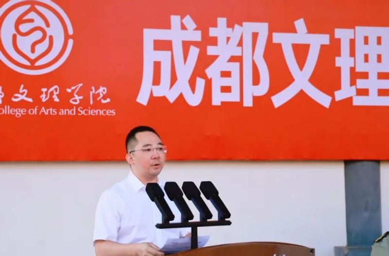
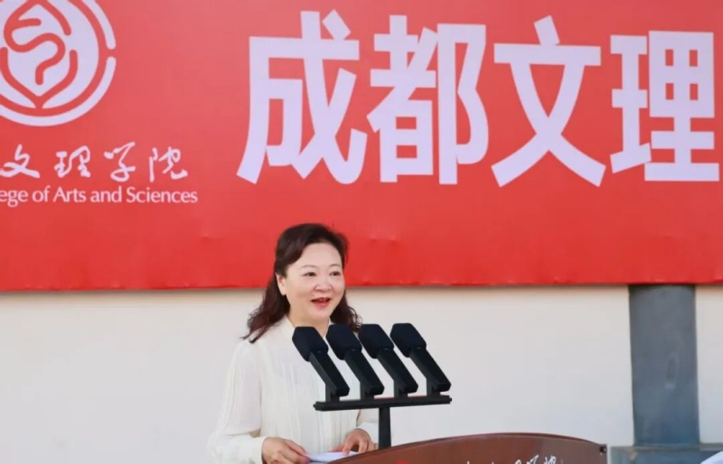

9月5日上午，我校2026级学生军训开训动员大会于第一运动场举行。学校党委书记、政府督导专员、学校学生军训领导小组组长高华锦，党委副书记、纪委书记、军训团政委王亚军，党委副书记、工会主席、学校学生军训领导小组副组长卢元勇，校长助理、继续教育学院院长巫英杰，党委委员、学生工作部部长、军训团副政委牟金星，校团委书记、学生工作部副部长、军训团副政委郑巍巍出席大会。各二级学院党委书记、全体教官、带训干部、全体2026级新生到场参加。
在庄严的国歌声中，大会正式开始。
高华锦讲话。她向承训的金堂县人民武装部、教官以及参与军训的师生表达感谢，指出军训是大学生活第一课，是法定必修课，是开展国防教育、磨砺意志、锤炼作风的重要途径。她结合国防与长征精神引出对同学们提出四点希望：一要磨砺意志铸青春，克服娇气惰性，在艰苦训练中培养直面困难、永不言弃的毅力；二要赓续血脉传薪火，学习人民军队优良传统，严守纪律、听从指挥，感悟军人的担当，传承红色基因；三要团结协作聚力量，体会集体的温度，发扬集体主义精神，互帮互助，将个人融入集体；四要厚植情怀担使命，学习军事知识，树立国家安全观，把爱国之心化为报国之行。她勉励同学们以长征精神投入军训这场青春洗礼，交出大学生第一课的优异答卷，并预祝本次军训圆满成功。

